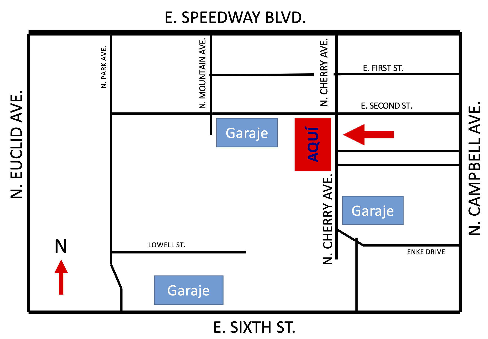

Información (Information)
Astrocharlas es una serie de charlas públicas sobre astronomía completamente en español! Está dirigido por Steward Observatory, una de las instituciones más presentes en la investigación de Astronomía y Astrofísica en el mundo. Astrocharlas busca llevar la astronomía a la comunidad hispanohablante de Tucson y la Universidad de Arizona. El programa fue establecido en 2018 por Nico Garavito y la Dra. Gurtina Besla.
Astrocharlas is a public talk series about astronomy in Spanish! It is run by Steward Observatory, one of the premiere institutions in Astronomy and Astrophysics research in the world. Astrocharlas seeks to bring astronomy to the Spanish speaking community of Tucson and the University of Arizona. The program was established in 2018 by Nico Garavito and Dr. Gurtina Besla.
FAQ
- ¿Con qué frecuencia ocurre esta charla? (How often does this talk happen?)
Las Astrocharlas ocurren dos veces al año, una durante el semestre de otoño y la otra en la primavera. (Astrocharlas happens twice a year, once during the Fall semester and once in the Spring.) - ¿Quién puede venir a la charla? (Who can come to the talk?)
¡Cualquiera y todo el mundo! Astrocharlas está abierta a todos los miembros del público. (Anyone and everyone! Astrocharlas is open to all members of the public.) - ¿Cómo puedo enterarme sobre la próxima charla? (How can I find out about the next talk?)
¡Únete a nuestra lista de correos! Puedes encontrar el formulario aquí. (Join our mailing list! You can find the form here.)
Steward Observatory está ubicado en 933 N Cherry Ave, Tucson, AZ 85719 en la Universidad de Arizona. Está cerca del planetario de Flandrau y del estadio de Arizona. A continuación se muestra un mapa de donde se puede encontrar el Observatorio Steward y dónde aparcar en los garajes cercanos.
Steward Observatory is located at 933 N Cherry Ave, Tucson, AZ 85719 at the University of Arizona. It is near Flandrau Planetarium and Arizona Stadium. Below is a map of where you can find Steward Observatory and where to park in the nearby garages.